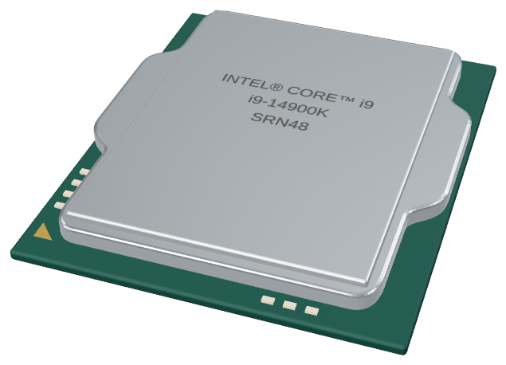

CPU
GPU
DDR5 메모리
M.2 SSD
SATA 하드 디스크
CPU 쿨러
전원 공급 장치
메인보드 전원부
칩셋
펌웨어 플래시
PCIe 확장 카드
후면 입출력
하나의 메인보드
모니터 밖으로
EVERY PART / ONE COMPUTER
Computer WikiHARDWARE & HOW IT WORKS필름 다시 보기 ↗
Computer Wiki
부품에서 시작해, 작동 원리까지
CPU
드래그로 회전 · 스크롤로 확대
위로 드래그하여 따라가기 ↑Computer Wiki →